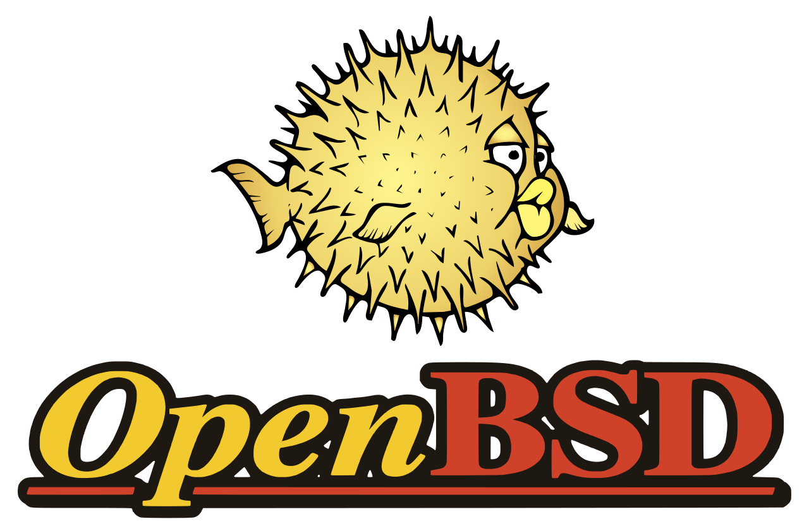

Welcome to Cameron's Website!
My Favourite Things
Basketball Teams
- LA Lakers
- Washington Wizards
- Golden State Warriors
Haiku
An old silent pond...
A frog jumps into the pond,
splash! Silence again.
An old silent pond...
A frog jumps into the pond,
splash! Silence again.